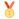

Biographie de Alexis Pinturault
Alexis Pinturault est né le 20 mars 1991 à Moûtiers, en Savoie, son père, Claude Pinturault, est propriétaire de l'hôtel Annapurna à Courchevel et sa mère, Hege, norvégienne, vit à Menthon-st-Bernard. En 2007, il entre à la section ski de haut niveau du Lycée d'été d'Albertville. À 18 ans, pour la saison 2009, il devient l'un des skieurs les plus prometteurs en France en remportant le titre de champion du monde junior de slalom géant à Garmisch-Partenkirchen, devant les Autrichiens Björn Sieber et Marcel Hirscher. Il devient ensuite champion de France senior du super combiné, profitant des absences de Jean-Baptiste Grange et Julien Lizeroux, puis champion de France senior du géant en 2010 devant Cyprien Richard.
Après plusieurs participations à des slaloms et slaloms géants en coupe du monde à partir de mars 2009 où il ne rentre jamais dans les points, il inscrit ses premiers points à l'occasion de sa première participation à un super G en prenant la sixième place à Hinterstoder malgré un dossard très élevé (le 62). À quelques jours des championnats du monde de Garmisch-Partenkirchen, cette performance lui permet de postuler à la sélection pour ces mondiaux à tout juste dix-neuf ans. Il est finalement sélectionné à la suite du forfait de Julien Lizeroux.
Lors de ces Championnats du monde 2011 de Garmisch-Partenkirchen, il termine 17e du slalom remporté par Jean-Baptiste Grange après une cinquième place obtenue lors de la deuxième manche. Deux semaines plus tard, il obtient son premier podium en coupe du monde en prenant la deuxième place du slalom géant de Kranjska Gora alors qu'il n'a pas encore fêté son vingtième anniversaire. Il remporte lors de cette saison le classement final de la Coupe d'Europe grâce notamment à cinq victoires en slalom géant ou en slalom, ainsi que le titre de champion de France de slalom.
Alexis Pinturault, né le 20 mars 1991 à Moûtiers (Savoie), est un skieur alpin français polyvalent, champion du monde du combiné à Åre en 2019, 37 ans après l'actuel président de la Fédération française de ski Michel Vion. Il est par ailleurs le seul skieur français de l'histoire à avoir remporté la petit globe de cristal du combiné alpin, en 2016, en 2017 en 2019 et en 2020. En comptant ses victoires aux classement du combiné en 2013 et 2014 qui ne délivrait alors pas de globe, il y totalise six victoires en tout, ce qui constitue un record. Il est le skieur français comptant le plus grand nombre de victoires en Coupe du monde (29) et le quatrième skieur alpin de son pays à totaliser trois médailles olympiques après Henri Oreiller, Jean-Claude Killy et Franck Piccard. Sa polyvalence fait de lui l'un des skieurs les plus complets du circuit de la Coupe du monde. Durant sa carrière, il s'aligne en super G, en slalom géant, en slalom et en combiné.
Voici la liste des médailles gagnée par Alexis Pinturault :
- Jeux Olympiques
-  0
- 1
- 2
- Championnats du monde (individuel)
- 1
- 0
- 2
- Championnats du monde (par équipes)
- 1
- 0
- 0
- Coupe du monde (globes)
- 4
- 5
- 8
- Coupe du monde (épreuves)
- 33
- 19
- 16
Pour en savoir un peu plus sur Alexis Pinturault vous pouvez aller sur sa page wikipedia